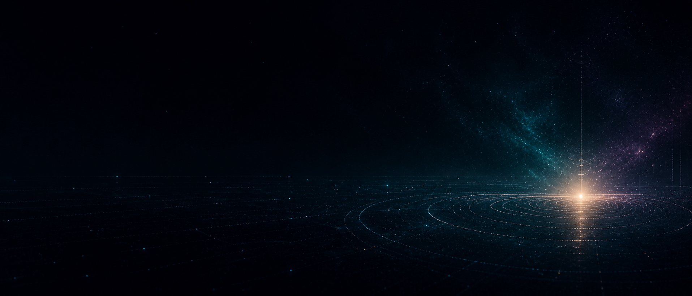

// musikk
Musikk
Lyd som ikke vil gi seg — mellom rommet og tastaturet.
// prosjekt
øther/dev/null

øther/dev/null er et elektronisk konseptprosjekt som lever i to stemninger — begge rotfestet i stillhet og rom.
Den første er kosmisk og eterisk: dyp sub-bass med vektløs kvalitet, melankolske melodier i moll. Følelsen av å drive alene gjennom noe vakkert og uendelig.
Den andre er koder-kjeller: mekanisk bas, skarpe arpeggio-synther som tastaturklikk, glitchy micro-cuts og kald fluorescent-atmosfære. Tunnel vision klokken 02:47 — koden virker endelig.


// live og akustisk
Musikkarriere
Instrumenter
Bass er huset mitt — det er der jeg kjenner musikken best. Men jeg finner meg godt igjen på de andre strengene og bak et piano når stemningen krever det.
// Front of House
Jeg har solid erfaring som lydtekniker for mindre live-arrangementer med 50–200 tilskuere. Det innebærer alt fra riggsetting og signalflyt til miksing under konsert og monitorjustering for utøverne.
Å jobbe Front of House har gitt meg en sterk forståelse for rom, dynamikk og hva som faktisk høres bra ut i et levende publikum — ikke bare i hodetelefoner.